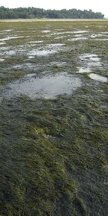

|
|
|
green seaweeds text index | photo
index
|
| Seaweeds > Division Chlorophyta |
| Caulerpa
green seaweeds Caulerpa sp. Family Caulerpaceae updated Jan 13 Where seen? Many of the green seaweeds seen on our shores belong to this genus. Features: These small, bright green seaweeds come in a variety of shapes. Some look like sausages made up of tiny little green balls, others look feathery and resemble seagrasses, yet others are like tiny umbrellas. Here's more on how to tell apart the sea grapes seaweeds. According to AlgaeBase, there are more than 190 current Caulerpa species. Human uses: Caulerpa species are among those grown for human consumption. These include Caulerpa lentillifera. However, some Caulerpa species produce toxins to protect themselves from browsing fish. This also makes them toxic to humans. Caulerpa taxifolia was accidentally introduced outside its natural range and has now become a serious pest in the Mediterranean, Australia and California. Slug heaven: Many kinds of sap-sucking slugs (Order Sacoglossa) are often seen in Caulerpa green seaweeds. |
 A bloom of Feathery green seaweed. Chek Jawa, Aug 07 |
| Caulerpa seaweeds on Singapore shores |


| Caulerpa
recorded for Singapore Pham, M. N., H. T. W. Tan, S. Mitrovic & H. H. T. Yeo, 2011. A Checklist of the Algae of Singapore. +From our observation
|
Links
|
|
|